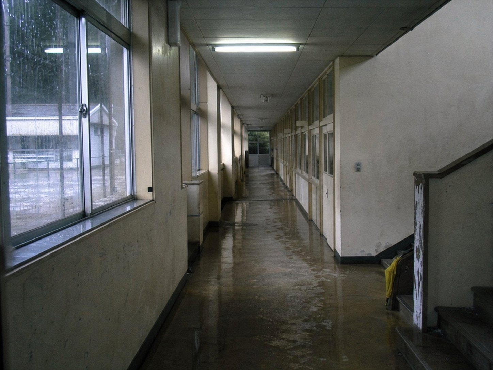

校舎裏動線メモ。場所名はPTA記録、学校だより、留言板で表記が少しずつ違います。
雨天時導線メモ
| 場所 | 通常時 | 雨天時 | 備考 |
|---|---|---|---|
| 裏山観察路 | 理科観察で使用 | 閉鎖 | 掲示板では「山道」と書かれることがある。 |
| 旧体育館東側 | 体育館裏の近道 | 迂回 | 学校だよりでは「東側階段」と表記。 |
| 図書室裏口 | 職員のみ | 施錠 | 貸出カード束の移動時のみ開錠。 |
| 職員室前 | 連絡網掲示 | 確認表掲示 | 19時台の控えはPTA資料へ移管。 |
照合の注意
この校内図には時刻と人物名がありません。場所だけを先に決めず、PTAの現地確認欄と学校だよりの使用禁止表現を合わせて確認してください。
閉校準備中に追加された赤鉛筆の矢印は、旧体育館東階段から図書室ではなく、展示準備棚のほうへ伸びています。資料が移された経路として読むと、夜間巡回控えの19:31と重なります。